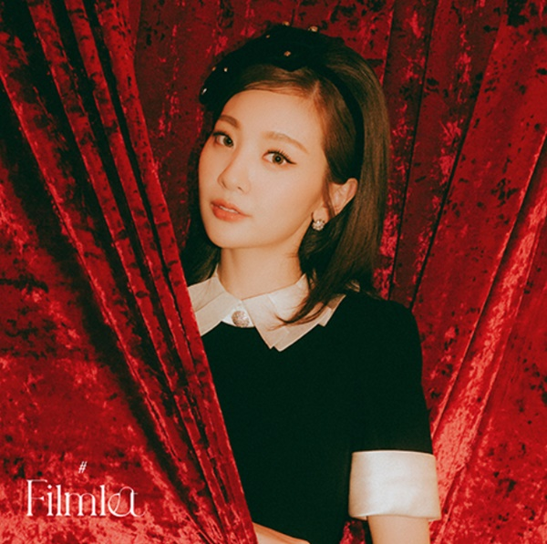

볼빨간사춘기가 싱글앨범 'Filmlet(필름릿)'으로 음원 차트 1위를 기록했다. 싱어송라이터 볼빨간사춘기는 지난 4일 싱글 앨범 'Filmlet'을 발매했다. 이후 타이틀 곡인 'Dancing Cartoon'은 지니 뮤직, 벅스 등 온라인 음원차트 1위에 이름을 올렸다.
싱글 앨범 'Filmlet'은 삶을 단편영화로 그려내 본다면 당신이 그 영화 속의 주인공이며, 그래서 가장 찬란하게 빛나고 있다는 메시지를 전하는 앨범이다. 타이틀곡 Dancing Cartoon'은 미디엄 템포의 펑키 한 리듬을 가진 레트로 디스코 장르의 곡으로,톡톡 튀는 가사와 보컬의 창법으로 흥겨움을 더해 ‘내적 댄스’를 유발하게 한다.